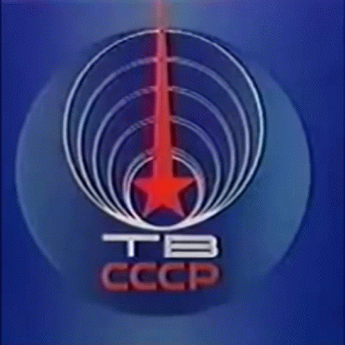

La place du sport dans les années 80 :
Alors que le monde vivait encore sous deux blocs en pleine guerre froide au sein d’un contexte international tendu, le sport réunissait les nations sous tensions, les spectateurs mais aussi les sportifs lors d’événement internationaux, qui pendant un cours instant faisait oublier le contexte géopolitique difficile de cette décennie et réunissait les nations ensembles.
Ainsi le sport occupe une belle place et est de plus en plus accessible sur les écrans des familles à la maison, le suivi sportif à la télé en direct ou même les cours de gym ont réellement pris davantage d’importance et de place au sein de la société.
Finalement, une nouvelle mode se dessine.
En France par exemple, l'émission "Gym Tonic" était une émission télévisuelle d'aérobic, elle deviendra rapidement très suivie par près de 12 millions de spectateurs par émission !
Cependant, ce type de contenu était alors tout nouveau pour l'époque, la réaction du public et des professionnels de santé fut mitigés, Antenne 2 reçevra de nombreuses critiques.
Le sport en URSS :
De l'autre côté du Rideau de Fer, le sport est évidemment prégnant dans la société soviétique.
La doctrine communiste était favorable aux sports collectifs, néanmoins les sports individuels quant à eux étaient proscrits.
C'était aussi un outil de propagande dédié à soumettre implicitement le discours de la classe politique.
Pour l'URSS, le sport était parti intégrante de la formation du citoyen soviétique modèle.
L'hockey sur glace et la lutte ont été des sports très populaires en URSS et sont d'ailleurs encore actuellement populaire en Russie.